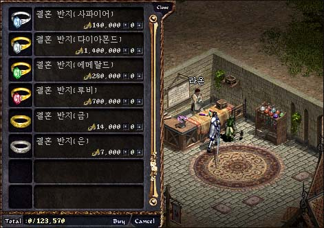

|
2003年5月23日
韓國測試伺服器5月23日更新內容
來源：Lineage Playforum
日文翻譯：Lineage Report
1. 精靈餅乾的有效時間由5分鐘增至8分鐘。
2. 肯特城堡、妖魔城堡、風木城堡、海音城堡及奇岩城堡的城門增闊了。
3. 亞丁村的NPC魅利沙會售賣及收購精靈水晶。
4. 亞丁村的NPC柏魯瑟會為玩家制造果汁，村料如下：
香蕉果汁：香蕉(5) 蛋(1) 紅蘿蔔(1) 檸檬(1)
橙汁：橙(5) 蛋(1) 紅蘿蔔(1) 檸檬(1)
蘋果汁：蘋果(5) 蛋(1) 紅蘿蔔(1) 檸檬(1)
5. 說島之島吉倫之家的守衛抽起了，以防止玩家利用不同區域的漏洞來進行PK。
6. 200支箭可以換1支安特的樹枝。（更正了）
7. 除了目前的藍寶石及鑽石結婚戒指外，還加入了紅寶石、綠寶石、金及銀結婚戒指。

8. 修正了部分文字錯誤。
50級任務獎勵道具資料
來源：Lineage Playforum
英文翻譯：Lineage Compendium
以下為韓國測試伺服器的資料，將來是有可能會更改的。
王族50級獎勵：
黃金賜杖(Gold Scepter)
攻擊力：14/14
單手武器
攻擊成功 +1
可使用職業：王族
材質：金
重量：110
安定值：6
評語：王族的力量魔法杖！
騎士50級獎勵：
死亡之刃(Death Blade)
攻擊力：16/8
單手武器
攻擊成功 +2
可使用職業：騎士
材質：金屬
重量：100
安定值：6
評語：瑟魯基之劍輕便及對大怪弱化版
妖精50級獎勵（二選一）：
火焰之弓(Flame Bow)
攻擊力：3/3
雙手武器
攻擊成功 +2
額外傷害點數 +4
可使用職業：妖精
材質：銀
重量：30
安定值：6
評語：沙哈之弓的翻版？！在沒箭時會否射出火焰箭呢？對不死系會否再有額外加成？
火焰之劍(Flame Sword)
攻擊力：14/6
單手武器
攻擊成功 +4
可使用職業：妖精
材質：銀
重量：110
安定值：6
評語：打骨比細劍還要強！打人和細怪也不錯（但古劍可能更強）。
法師50級獎勵：
瑪那水晶球(Mana Crystal Ball)
防禦力：3
盾牌
可使用職業：法師
魔力上限 +100
材質：玻璃
重量：50
安定值：4
評語：會否增加魔力回覆速度呢？你會否選擇1點智力也不要100魔力呢？
另外在Lineage Playforum亦有介紹試鍊的流程，稍後再作翻譯（太累了）。
香港伺服器繼續無間大斷線（2003年5月23日下午1:12及1:57）
似乎NC Gamania正在趕客，明知網絡有問題就應該儘早關閉伺服器維修吧！目前香港伺服器已經關閉並維修中，但伺服器在上線後你還敢再玩（再被玩？）嗎？
香港伺服器第N次大斷線（2003年5月23日早上11:34）
在約早上11:34香港伺服器又又又又又再大斷線，各大ISP及網吧均有大斷線的情況出現，而是次問題並維持了超過20分鐘，並不是短暫的暫停或斷線，明顯是伺服器所使用的ISP(Hutchison Telecommunications)對外網絡出現嚴重故障（下刪1000字．．．）。這一次官方不能再抵賴了，一定會賠償或是回溯，大家等官方公告吧！ =.=
跟進：GM在遊戲內已經通知玩家，官方會賠償玩家在大斷線中所損失的經驗值及道具。有一點大家要注意的，假如你去亞丁教堂買回經驗值，官方則只會賠償死亡所損失一半的經驗值（49級或以上2.5%），因此你會白白浪費了奉獻金。其實官方應該清楚地列明及提醒玩家賠償的過程及細則，這讓才不會使玩家有所誤會，官方應該為買回經驗值的玩家退回奉獻金，這才是公平的做法。 |